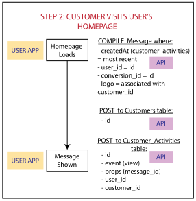
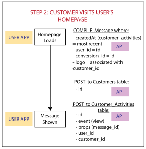

WRITTEN BY
Emily Guttenberg
Software Engineer
On most B2B websites, you’ll find the same static forms of social proof. Testimonials. Logos. Case studies. They’re one of the most powerful and widely used marketing tools to convert visitors into customers. However, social proof for B2B websites is notoriously difficult to capture and keep up-to-date, leading to stale content, expensive refreshes, and lost conversion opportunities.
We wanted to automatically capture and display relevant social proof for B2B websites, converting more customers and reducing marketing costs. After researching successful B2C social proof products, we planned to take the key features of these products and target a B2B customer. Given that logos are one of the most powerful and common forms of B2B social proof, this became the key differentiating feature for our MVP concept.
Concept
Show visitors recent social proof through a pop-up message (the "Message"), which includes:
Execution
Develop a third-party javascript widget that:
The development process was formed not only to help break down a large-scope project into deliverables, but also to simulate working with a bigger team.
After working with the Product Manager to define our requirements and vision for the MVP, I broke down our rough sketches into user stories. Writing user stories helped me think through what I needed to do, as well as scope and plan out our sprints.
As a User, I want to:
While logged in to the Leery User App:
Before starting to code, I planned out the user experience to ensure it was both simple and well-architected. The diagrams below show the full use cycle of Leery. The colored labels (e.g. "User App") refer to the various components of the product, which are described in more detail in the System Design section below.
 


Leery's architecture was dictated by the needs that naturally arose from the User Flow above. The database structure was designed to easily enable table joins for both current functionality and future analytics features. For the application, I chose a Javascript tech stack (e.g. React and Node.js) to benefit from a single page application on the front-end and reduce context switching between front-end and back-end development. For the static landing page, Webflow saved hours of HTML/CSS styling to enable me to focus more on building application features.
Leery Landing Page (Webflow)
User App (Node-React-Express)
Widget (Node-React)
Conversion Assist (Javascript)
API (Node-Express)
Connects to PostgreSQL database to store:

To get Leery in production, I needed to deploy the API (Node.js) and various static assets (React, Javascript, HTML/CSS). I chose AWS as a cloud provider to take advantage of their free tier and “pay as you scale” model. Deployment was a multi-step process that involved considering which AWS product would be the most fitting for each component in the System Design. Whenever possible, I chose products that required minimal maintenance and configuration to maximize uptime (e.g. S3 and Elastic Beanstalk rather than EC2).
Leery Landing Page
User App, Widget, Conversion Assist
API
Leery has a lot of opportunity for growth, and I’m constantly considering ways to improve it. Throughout the project, I added tickets to our backlog as I found opportunities to improve security, add new functionality, or fix existing bugs. As we moved past the MVP launch, I prioritized backlog tickets to continue iterating on the product.
Security
Functionality
Tech Debt/Bugs
The Product Manager mainly played a part-time role in helping to guide the vision, development process, and code reviews, while I worked on all other aspects of Leery full-time.
Product Manager: Marshall Guttenberg

WRITTEN BY
Emily Guttenberg
Software Engineer
Website